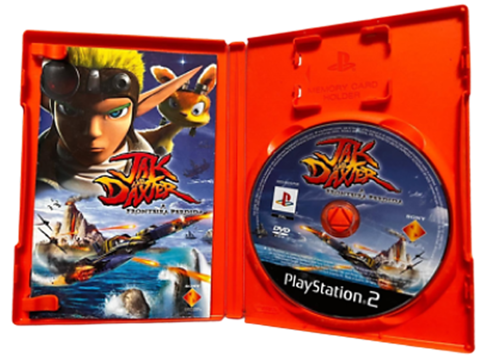

Oggi aprire la scatola di un gioco significa spesso trovarla vuota: niente più profumo di carta,
niente mappe da spiegare sul letto, solo un disco o un codice digitale.
Per decenni, i manuali e i gadget inclusi nelle confezioni sono stati il vero ponte tra noi e il mondo virtuale.
Non erano semplici accessori, ma custodi di storie e segreti che oggi rischiano di svanire nel silenzio del digitale.
In questa pagina riscopriamo cosa rendeva quei libretti così speciali e perché abbiamo deciso di non lasciarli dimenticare.
Cosa racchiude un manuale?
Ogni manuale era una piccola enciclopedia dedicata al giocatore. Sebbene ogni titolo avesse il suo stile, la struttura classica seguiva un percorso preciso:
🎮 Istruzioni e Comandi
Prima dell'era dei tutorial interattivi, il manuale era l'unico modo per imparare a giocare. Qui venivano spiegati i tasti, le combinazioni segrete e le funzioni del controller. Spesso, nelle ultime pagine, si trovavano anche suggerimenti strategici o trucchi per superare i livelli più difficili.
🎨 Artwork e Bestiario
A causa dei limiti tecnici delle vecchie console, i personaggi a schermo erano spesso un insieme di pochi pixel. Il manuale colmava questo vuoto: grazie a disegni e illustrazioni ad alta qualità, potevamo finalmente vedere il vero volto dell'eroe e dei mostri che stavamo affrontando, dando un volto concreto alla nostra fantasia.
🗺️ Mappe e Gadget
Alcuni manuali erano accompagnati da tesori extra: mappe in carta lucida fondamentali per non perdersi, o adesivi esclusivi. In alcuni casi, i manuali contenevano persino codici anti-pirateria o tabelle di riferimento che rendevano l'oggetto fisico indispensabile per completare l'avventura.
